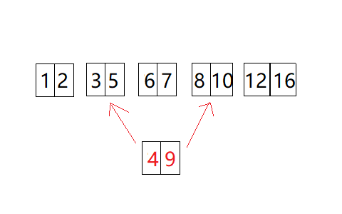

问题:
leetcode: Problem #57
Insert Interval
Given a set of non-overlapping intervals, insert a new interval into the intervals (merge if necessary).
You may assume that the intervals were initially sorted according to their start times.
Example 1:
Given intervals[1,3],[6,9], insert and merge[2,5]in as[1,5],[6,9].Example 2:
Given[1,2],[3,5],[6,7],[8,10],[12,16], insert and merge[4,9]in as[1,2],[3,10],[12,16].This is because the new interval
[4,9]overlaps with[3,5],[6,7],[8,10].
题目大意就是给出一段已经排序好的不重叠区间，然后求解插入新的数据后的区间。
解:
由题目得知本来已经有序，所以我们只需要找到和给出数据重合的部分，然后更新相关值即可。

主要的问题就是寻找左右边界：
首先，确定左边界:
newInterval肯定是取start,关键是原数据(后文中的A)中应该取start还是end。
如果与start比较，那么先猜想判断条件为A.start >= newInterval.start。那么改变newInterval.start来试下条件是否依然成立。我们可以依次尝试4、3、2.5(这里取小数只是为了说明算法)。在这3种情况下，左边界都是在[3,5]。但是3个数与A.start分别是大于、等于、小于关系，并不能找出判断条件。
再试试end，猜想条件为A.end >= newInterval.start。继续做上面的尝试，发现4、3、2.5情况下都满足，然后取2。这时[1.2]满足条件，左边界左移。所以猜想成立，左边界判断条件为A.end >= newInterval.start。
接下来确定右边界：同理假设以后可得，应该取A.start。但是这里有个问题就是，我们找到的符合条件(A.start > newInterval.end)是指向右边界的下一个。写代码时候需要注意。
找到2个迭代器后，如果2个在同一位置，说明插入数据没有和原数据重叠。其他情况下把左边界更新为新值，然后删除重叠的部分。
下面先给出寻找左边界的代码。由于原数据是有序的，所以我们自然而然想到二分。这里为了代码的整洁，其实是我懒，直接调用了STL里面的算法。STL中常用的二分有binary_search(), lower_bound(),upper_bound()。这里因为条件是 >= 。所以用lower_bound。代码如下：
|
|
这里使用了lambda表达式，其实如果这里写个单独的函数也是可以的，而且后文可以得到更加直观的结论。
然后是右边界的：
|
|
对比上面两段代码，我们发现：2个函数使用的谓词函数形式居然一样。等等，我们刚刚使用的不是A.end >= newInterval.start与 A.start > newInterval.end么？这里我第一次写的时候也出错了。早知道自己写2个二分就没这么多事 。查看STL源码后知道：upper_bound和lower_bound为了保持谓词的一致性(即 <)，所以在lower_bound中二分法比较大小时调用的是Pred(*_Mid, Val)，而在upper_bound中调用的是!Pred(_Val, *_Mid)来完成比较操作。stl设计的巧妙可见一斑啊。不说了我继续去看stl源码了:)
Code:
|
|
###